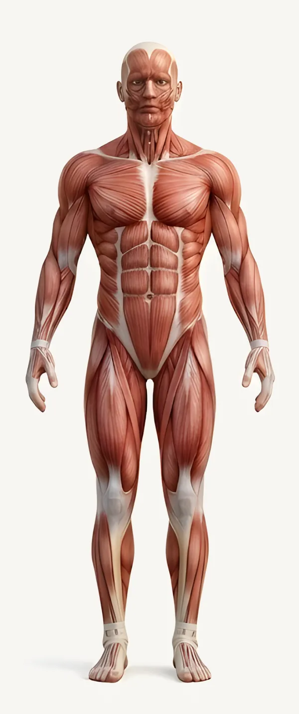
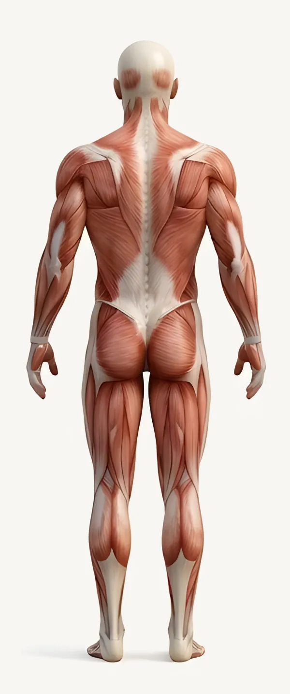

La séance ABmoment
Notre traitement signature : la thérapie par ventouses associée aux techniques manuelles de déblocage articulaire, en une séance d'1 heure.
- Relâchement des tensions musculaires
- Mobilité articulaire
- Récupération et bien-être
Nos soins
Chaque séance commence par un échange sur vos douleurs et vos objectifs. Le traitement est ensuite adapté à vous.
La séance d'1 heure, au même tarif chez chacun de nos praticiens.
Notre traitement signature : la thérapie par ventouses associée aux techniques manuelles de déblocage articulaire, en une séance d'1 heure.
Rééducation et traitement des douleurs musculaires et articulaires, après une blessure, une opération ou en cas de douleurs installées.
Technique traditionnelle qui aspire doucement la peau pour relâcher les tensions musculaires et favoriser la récupération.
Mobilisations et techniques manuelles de déblocage articulaire pour retrouver de l’aisance dans le mouvement.
Des bottes à compression pneumatique massent les jambes par vagues successives, pour une sensation de légèreté.
Massages de détente ou massages sportifs, adaptés à vos tensions et à votre rythme.
Bilans et accompagnement des fonctions cognitives : mémoire, attention, concentration et organisation.


Zones traitées
Choisissez une zone : elle s’éclaire sur le corps.
Appelez le centre ou contactez directement votre praticien, par téléphone ou WhatsApp.